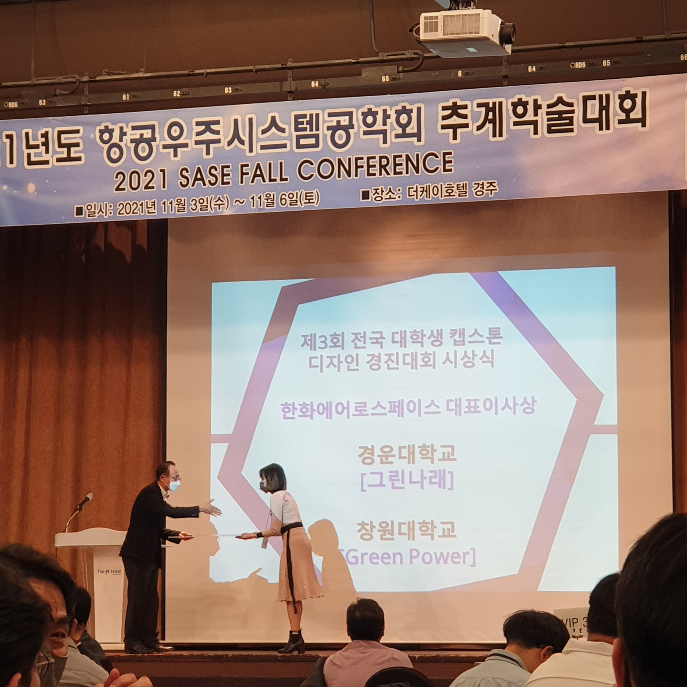
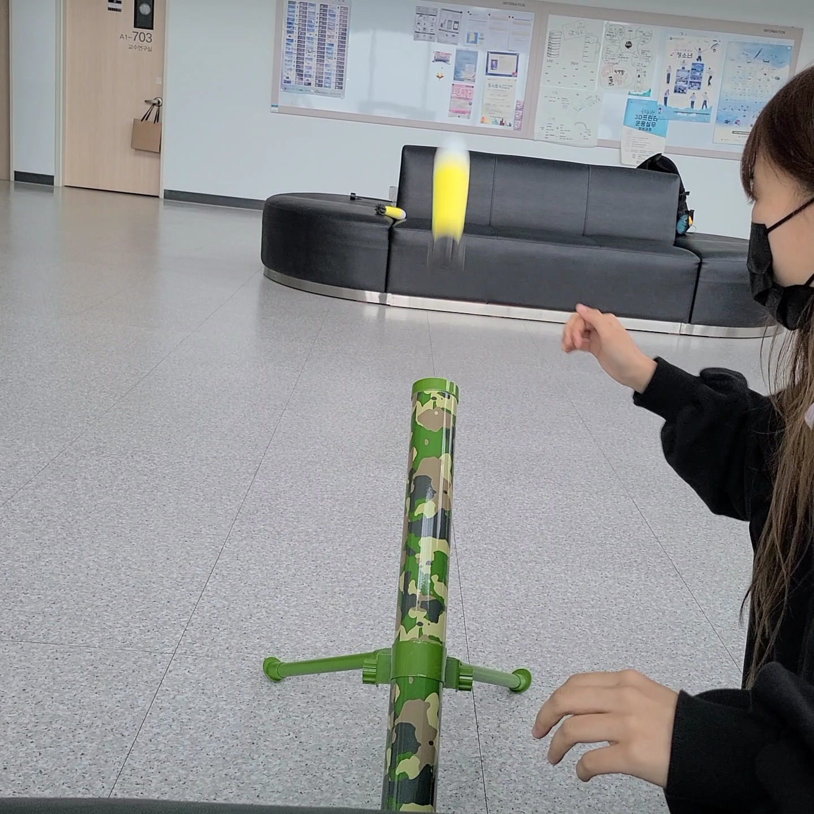

Launch-type Foldable Quad-Copter Project
Development of an innovative foldable drone using CATIA V5, Pixhawk, and Ardupilot

This project presents the design and development of a launch-type foldable quad-copter drone. The primary goal was to enhance portability and flight stability. The drone can be folded for easy transport and launched from a compact configuration, making it ideal for rapid deployment scenarios.
Key design challenges included balancing structural integrity with the folding mechanism. Extensive Computational Fluid Dynamics (CFD) analysis was carried out to ensure optimal aerodynamic performance during flight.
Physical flight tests confirmed that the drone maintained stability even at higher speeds, validating the effectiveness of the aerodynamic design improvements made during simulation.
Awarded Hanwha Aerospace CEO Prize
Simulation and Analysis

The CFD simulations evaluated the airflow around the drone's body at various speeds (1m/s, 3m/s, 5m/s, and 7m/s). The analysis focused on understanding how the drone's body shape impacts aerodynamic forces and overall flight stability. The results showed that as the speed increases, the total pressure along the drone's body varies, which directly affects its lift and drag performance.
Flight Test Results
The foldable drone was tested for flight stability and performance in real-world conditions. During the flight test, the quadcopter showed stable behavior at 1m/s, 3m/s, 5m/s, and 7m/s speeds. These tests confirmed that the foldable mechanism did not negatively impact the drone's aerodynamic performance.
Prototype and Design
Key specifications of the prototype:
- **Body length**: 300mm
- **Wingspan**: 500mm
- **Folded size**: 150mm (diameter)
- **Weight**: 1.5kg
- **Flight Controller**: Pixhawk (Ardupilot)
- **Motor**: 10N thrust per motor
The frame was constructed using lightweight carbon fiber, ensuring both strength and flexibility during folding and unfolding operations. A **Pixhawk flight controller** with **Ardupilot firmware** was employed for autonomous control, with precise launch and landing mechanisms developed for safe operation.
Acknowledgments
This project was presented at the Society for Aerospace System Engineering in Gyeongju, Korea, in 2021, and won recognition for innovative design and practical application in unmanned aerial vehicles.
J. Lee, H. Nar, J. Park (2021), Poster session at the Society for Aerospace System Engineering, Gyeongju, Korea.